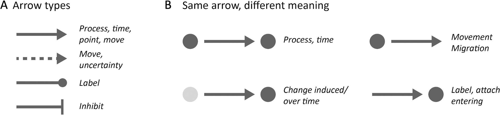
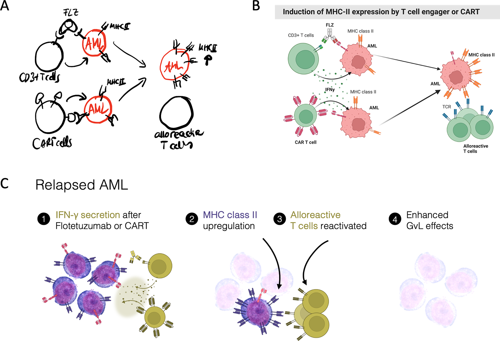
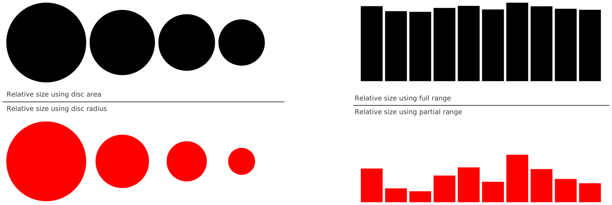

앞으로 할 일의 타당성
독자의 질문: 왜 이 문제를 지금 해결해야 하고, 목표·방법·인력·일정이 연결되는가?
그림이 맡는 일: 현재 문제 → 목표 → 연구 내용 → 검증 → 기대 성과를 구분하고 추진 조직의 역할과 의존관계를 밝힌다.
확인: 계획을 이미 달성한 결과처럼 표시하지 않았는가? 아이콘이나 선이 실제 역할·책임을 지나치게 단순화하지 않는가?
NIH 공개 제안서 사례와 지침 ↗DOCUMENT → MEANING → VISUAL FORM
같은 화살표와 원도 무엇을 연결하고 어떤 질문에 답하는지에 따라 다르게 읽힙니다. 실제 그림을 본문과 함께 읽으며 표현의 선택과 한계를 살펴봅니다.
그림만 보고 판단하기 전에 문서의 역할과 연구 내용을 확인합니다. 각 단계는 앞의 단계를 대신하지 않습니다.
같은 주제라도 독자가 내려야 할 판단과 문서의 위치가 달라지면 그림의 역할도 달라집니다. 아래는 분석을 시작하기 위한 질문이며 제출 기관의 실제 서식과 지침이 우선합니다.
독자의 질문: 왜 이 문제를 지금 해결해야 하고, 목표·방법·인력·일정이 연결되는가?
그림이 맡는 일: 현재 문제 → 목표 → 연구 내용 → 검증 → 기대 성과를 구분하고 추진 조직의 역할과 의존관계를 밝힌다.
확인: 계획을 이미 달성한 결과처럼 표시하지 않았는가? 아이콘이나 선이 실제 역할·책임을 지나치게 단순화하지 않는가?
NIH 공개 제안서 사례와 지침 ↗독자의 질문: 계획 대비 무엇이 진행됐고, 어떤 증빙과 변경 사유가 있는가?
그림이 맡는 일: 기준 시점, 계획과 실제 값, 결과의 증빙을 연결하고 미완료·변경·다음 조치를 구분한다.
확인: 수행 활동, 산출물, 효과를 혼동하지 않았는가? 값의 단위와 비교 조건이 같은가?
NSF 성과 보고 안내 ↗독자의 질문: 문제가 무엇이며 방법·관찰 결과가 주장을 얼마나 뒷받침하는가?
그림이 맡는 일: 방법도는 입력·연산·출력을, 결과도는 실험 조건과 관측값을 명확히 드러낸다. 분야별 기호와 범례를 확인한다.
확인: 방법의 흐름을 성능의 증거로, 사례 이미지 한 장을 전체 결과로 제시하지 않았는가?
MIT 연구 그림 설계 지침 ↗독자의 질문: 지금 봐야 할 핵심이 무엇이며 앞에서 배운 내용과 어떻게 이어지는가?
그림이 맡는 일: 청중의 선행 지식과 발표 순서에 맞춰 설명의 단위를 정하고 관련 주석을 가까이 배치한다.
확인: 발표자의 구두 설명이 없어도 슬라이드의 핵심 관계를 찾을 수 있는가? 전문 기호를 설명했는가?
MIT 발표 슬라이드 사례 ↗NIH와 NSF는 미국 기관의 예시입니다. 국내 과제의 필수 항목이나 도식 규칙으로 일반화하지 않습니다.
실제 그림을 읽고 기존 설명의 빈틈을 고친 사례를 회차별로 살펴보세요.
원문에서 확인한 내용과 이 사이트의 해석을 나눕니다. 그림의 한 사례가 분야 전체의 표준이나 인지 효과를 증명하지는 않습니다.
Jambor와 Bornhäuser는 화살표의 형태뿐 아니라 주변 대상과 맥락이 의미를 바꾼다는 점을 하나의 그림으로 설명합니다.

오른쪽 B의 동일한 직선 화살표는 두 원 사이에 놓이면 과정이나 시간, 하나의 원에서 바깥으로 이어지면 이동, 화살표 끝에 대상을 두면 지시·부착 등으로 제시됩니다. 출발점과 도착점이 읽기의 단서입니다.
먼저 두 대상의 관계를 문장으로 씁니다. “A의 결과가 B의 입력이다”, “A가 B를 억제한다”, “이 선은 B를 가리킨다”는 서로 다른 관계입니다. 혼동될 때는 레이블이나 범례로 밝힙니다.
그림 왼쪽의 억제 끝선이나 점선은 이 논문이 보여주는 예시입니다. 다른 분야의 표준과 실제 그림의 범례가 정한 의미는 별도로 확인해야 합니다.
하나의 생물학적 이야기를 손그림, 빠른 디지털 초안, 최종 그림으로 발전시킨 실제 사례입니다.

A는 손으로 개체와 관계를 빠르게 적고, B는 세포·분자와 흐름을 디지털 그림으로 정리합니다. C는 네 개의 번호와 짧은 설명을 상단에 나열하고 아래에 그림을 배치합니다. 원문은 이를 스케치에서 최종 구현으로 가는 제작 과정으로 설명합니다.
C의 번호는 독자가 이야기의 순서를 따라갈 단서를 제공합니다. 세포 그림은 추상적인 단어만으로 설명하기 어려운 대상을 보여줍니다. 이것은 배치의 가능한 기능이며, 저자가 각 결정을 그렇게 내렸다는 직접 증거는 아닙니다.
초안과 최종본은 추가·생략된 세부 사항과 강조가 있습니다. C가 독자에게 더 효과적이라는 통제 실험으로 제시된 사례도 아닙니다. 실제 원본과 본문을 함께 확인하세요.
미국 국립암연구소가 공개한 실제 제안서 두 편입니다. 둘 다 보건 분야의 실행 전략을 연구하지만 하나는 실행 전략과 성과의 관계, 다른 하나는 전략을 개발하고 시험하는 연구 계획을 중심으로 그렸습니다.
작은 검은 글씨와 흰 직사각형을 가로로 놓고, 정책·조직 특성에서 실행 전략을 거쳐 실행 환경과 효과·금연 성과로 이어지는 화살표를 사용합니다. 각 요소가 어떤 역할을 하는지 개념적 관계를 표현합니다.
위쪽의 Aim 1·2를 상자와 화살표로 연결하고, 아래쪽의 큰 Aim 3 영역 안에 두 가지 시범 전략, 조직·제공자·환자 요인과 시범 성과를 함께 배치합니다.
비교의 범위: 두 그림은 각각 실제 제안서의 개념 모형이지만, 연구 대상과 세부 목표가 달라 동일한 내용을 다른 스타일로 다시 그린 실험이 아닙니다. 원본 제안서의 재게시 조건을 확인하지 못해 그림은 출처로 연결합니다.
두 논문은 여러 사진으로 3D 장면을 복원하지만, 단계와 중간 결과를 서로 다른 방식으로 보여줍니다. 두 번째 원본 그림은 논문에서 직접 확인할 수 있습니다.
위 그림의 번호를 선택하거나 아래 항목을 열어 본문과 대조하세요. 번호는 원본 논문의 표기가 아닙니다.
보이는 것: Quantization 아래에 격자와 여러 색의 선이 있습니다. 본문 3.1절: 여러 영상 쌍에서 얻은 가까운 대응점 위치를 같은 격자점으로 반올림합니다. 이 과정은 다중 영상 사이의 일관성을 높이기 위한 대신 위치 정밀도를 잃습니다. 설계 해석: 단어만 쓰지 않고 격자 위의 점을 보여주므로 독자가 입력 좌표가 묶이는 과정을 그림으로 확인할 수 있습니다. 격자의 색이나 간격을 선택한 실제 이유는 확인하지 못했습니다.
보이는 것: Input Tracks와 Refined Tracks의 여러 영상 조각마다 원이 있습니다. 본문 3.2.1절: 한 트랙은 같은 3D 장면점에 대응하는 여러 영상의 2D 특징점 위치의 집합입니다. 따라서 이 원은 단계 아이콘이 아니라 관측 위치로 읽어야 합니다. 같은 도형이라도 그래프의 수치 원이나 제안서의 아이콘 경계와 의미가 다릅니다.
보이는 것: 이미지 조각과 점 사이에 Multi-View Matcher라는 이름의 상자가 놓입니다. 본문: 여러 영상의 특징 정보를 이용해 트랙의 점 위치를 조정하는 처리 모듈입니다. 설계 해석: 상자는 계산의 내부를 압축하고 주변의 그림은 입력·출력 데이터의 형태를 드러냅니다. 분홍색 자체가 학습 여부를 뜻한다는 범례나 색 선택의 저자 설명은 확인하지 못했습니다.
보이는 것: 기하 정제에서 트랙 정제 쪽으로 향하는 Projection 화살표가 있습니다. 본문 3.2.2절: 3D 점을 현재 카메라 자세로 영상에 재투영한 결과가 다음 반복의 2D 위치 초기값이 됩니다. 화살표는 반복이라는 큰 구조뿐 아니라 좌표계와 데이터의 변환을 담습니다. 선만 보고 데이터 유형까지 아는 것은 어렵습니다.
보이는 것: 점선 영역 안에 Merge, Complete, Filter와 작은 기호가 함께 있습니다. 본문 3.2.2절: 각각 조건에 맞는 트랙 병합, 빠진 2D 관측 추가, 큰 재투영 오차의 이상점 제거를 수행합니다. 설계 해석: 경계는 세 동작을 Topology Adjustment라는 상위 작업으로 묶고, +와 가위는 조작의 차이를 시각적으로 암시합니다. 정확한 실행 조건은 본문을 읽어야 합니다.
보이는 것: 왼쪽 Coarse Model과 오른쪽 Refined Model에 각기 오류 수치가 붙어 있습니다. 초기 모델과 정제 후 모델의 사례를 보여주지만, 한 장면의 그림만으로 데이터셋 전체 성능이나 일반화 가능성을 결론낼 수 없습니다. 논문의 실험 조건·표와 함께 판단합니다.
초기 모델을 만드는 영역과 반복 정제 영역을 크게 구분합니다. 정제 영역 아래의 Projection 화살표는 단순한 장식이 아닙니다.
초기 카메라·점군과 최종 카메라·점군을 나란히 보여주고, 가운데에 번들 조정을 둡니다.
비교의 한계: 두 논문은 같은 과제를 다루지만 알고리즘이 다릅니다. 다른 배치의 원인이 순수하게 시각적 취향이라는 뜻은 아닙니다. 논문 본문은 계산의 의미를 설명하지만 모든 색조·선 굵기의 제작 의도까지 밝히지는 않습니다.
같은 데이터도 원의 크기와 막대의 기준 범위를 어떻게 정하느냐에 따라 다르게 보입니다.

왼쪽은 30·20·15·10을 표시합니다. 위쪽은 원의 면적을 값에 비례시키고 아래쪽은 반지름을 값에 비례시킵니다. 반지름을 값에 비례시키면 면적이 값의 제곱에 비례하므로 큰 값이 훨씬 두드러집니다.
오른쪽은 같은 값들을 위에서는 0–100, 아래에서는 80–100 범위로 표시합니다. 이 예시는 차이가 과장될 수 있다는 점을 보여주기 위해 축 표기를 의도적으로 생략했습니다.
여기서 원은 양의 크기를 표현합니다. 제안서의 속 빈 아이콘 경계나 BPMN 이벤트 원은 다른 역할이므로 이 수치 부호화 규칙을 그대로 적용하면 안 됩니다.
표준이 정의한 의미와 일반적인 도식에서 맥락으로 추론하는 의미를 구분합니다.
업무 프로세스 표준에서는 원의 테두리가 이벤트 유형을 구분합니다. 시작·중간·종료의 테두리 차이는 장식이 아니라 규격입니다.
OMG 표준 원문 ↗IUPAC의 곡선 화살표는 전자 이동을 표현합니다. 일반 업무 흐름도의 단계 화살표와 같은 뜻으로 해석할 수 없습니다.
IUPAC 정의 ↗SBGN은 같은 생물학 시스템을 활동의 영향, 과정, 개체 관계라는 서로 다른 언어로 보여줍니다. 표시되는 상태와 관계도 달라집니다.
SBGN 실제 비교 그림 ↗동일한 생물학 시스템을 표현하더라도 세 그림이 같은 정보를 완전히 보존하는 것은 아닙니다. 표준 기호의 의미는 해당 언어와 버전의 명세를 확인하세요.
속이 빈 원을 예로 들면, 먼저 원이 실제 대상인지, 단계의 경계인지, 상태를 표시하는 기호인지부터 정합니다.
세포·관측점처럼 실체를 나타내는가, 아이콘을 감싸는 경계인가, 표준이 정한 이벤트인가?
원 안의 아이콘, 주변 레이블과 선의 방향을 함께 읽었을 때 전달하려는 관계가 드러나는가?
링은 내부 아이콘과 경계를 분리하는 한 방법이고, 채운 원은 배경과 강조를 만드는 다른 방법이다. 어느 쪽이 더 잘 읽히는지는 크기와 대비, 독자 과제에서 확인한다.
원본의 범례·본문을 확인하고 독자에게 대상과 선의 의미를 설명해 달라고 요청한다. 제작자의 의도와 독자의 실제 해석을 구분한다.
이 설계 질문은 조건부 판단을 위한 지침입니다. 특정 도식의 제작 이유나 독자 실험 결과를 대신하지 않습니다.